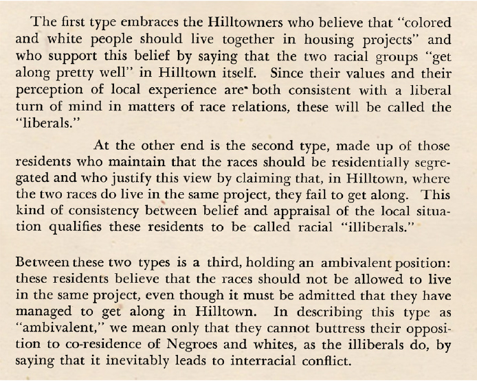
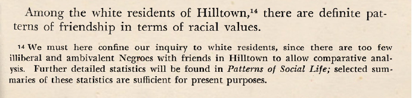
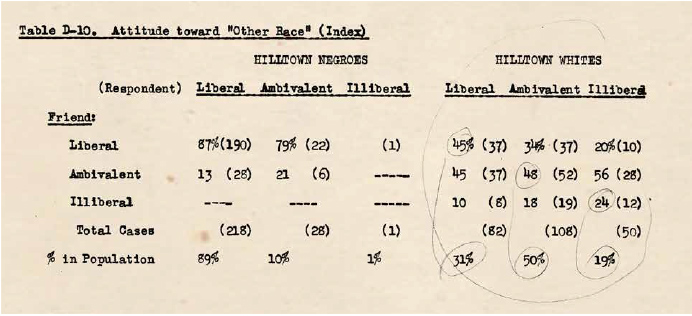
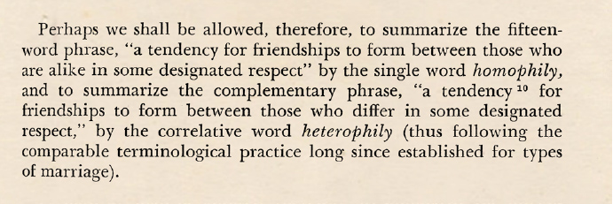

487 Hilltowners
To study social dynamics within planned public housing communities, Merton, together with researchers Patricia Salter West and Marie Jahoda, conducted an extensive survey of residents at Addison Terrace, which they code-named “Hilltown.”
Three Types of Hilltowners
The answers to these two questions helped Merton and Lazarsfeld divide the residents of Addison Terrace into three types: “liberals,” who believed that housing projects should be integrated and that people there “got along pretty well”; “illiberals,” who supported segregation and thought that people there failed to get along; and “ambivalent” residents, segregationists who nonetheless admitted that integration worked in Addison Terrace.
Erasure of Black Population
Lazarsfeld and Merton excluded responses from black residents to make statistically valid conclusions defining homophily as these residents were almost all “liberals.”3
Friendships
Among the white residents, Lazarsfeld and Merton concluded that “there are definite patterns of friendship in terms of racial values.”4 Liberals were more likely to be close friends with liberals, and illiberals with illiberals. (The ambivalent residents, who comprised the largest category of white residents, “expressed their uncertain and inconsistent racial values” through friendships with members of all three groups.) In short, they said that “value homophily prevails.”
Overselection
To arrive at this conclusion, the researchers showed that the relationship between friendship and shared values was not random: of the 31 percent of white residents categorized as liberal, 45 percent had friendships with other liberals, showing that liberals tend to overselect other liberals as friends. Likewise, of the 19 percent categorized as illiberal, 24 percent said they were friends with other illiberals. These disproportionate percentages demonstrated, as well as defined, homophily even though they were present only for a minority of the overall survey respondents.
Homophily
The values that Merton and Lazarsfeld studied were not randomly chosen. The concept of homophily was born in a racially mixed public housing project, and the shared opinions that demonstrated its existence concerned integration. It is not surprising that the issue of integration would be divisive and a deciding factor for friendships among white residents in a mixed-race yet segregated housing project in 1947. It is an irony of history that this highly contextually and historically specific empirical observation has subseq
